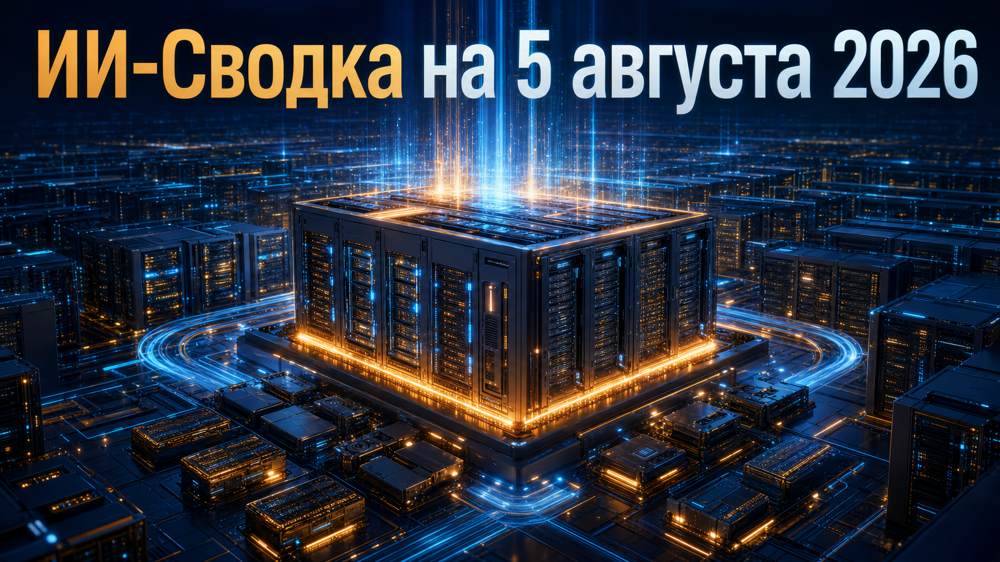

Новостей сегодня меньше, чем обычно
Главный подтверждённый сигнал дня пришёл с рынка вычислительной инфраструктуры. AMD отчиталась об ускорении сегмента Data Center, который объединяет серверные процессоры и GPU для крупных вычислительных нагрузок, включая ИИ.
Это не независимая оценка конкретных ускорителей и не полная разбивка продаж ИИ-GPU. Но квартальные показатели одного из крупнейших поставщиков серверных чипов помогают оценить, насколько спрос на мощности дата-центров переходит в выручку производителей оборудования.
AMD 4 августа опубликовала результаты второго квартала 2026 года. Согласно квартальной отчётности AMD, выручка сегмента Data Center составила около 6,7 млрд долларов и выросла на 107% год к году.
Компания связывает рост с поставками серверных процессоров EPYC и GPU для вычислительных задач, включая ИИ. Это важный рыночный индикатор для конкуренции на рынке дата-центров и ускорителей: спрос на вычисления остаётся высоким не только в планах операторов инфраструктуры, но и в финансовых результатах поставщика. При этом AMD не приводит в доступной карточке отдельную выручку именно от ИИ-GPU, поэтому нельзя по этому показателю точно измерить продажи конкретной линейки Instinct или конечный спрос на отдельные ИИ-продукты.